Psychopathologie de la ville quotidienne
Cristiano Gerardi
Club ASAP 02
mai 2023
Temps de lecture : 5 min
Application à l'urbanisme des théories Freudiennes
Illustration d'une importation théorique pour un projet de fin d'étude.
Sigmund Freud introduit la psychanalyse comme outil permettant de sonder l'inconscient à la recherche des raisons de troubles du comportement afin de soigner le patient.
Varsovie Hier
était une ville très vivante et cosmopolite, qui se faisait comparer par son charme à une Paris de l'Est.
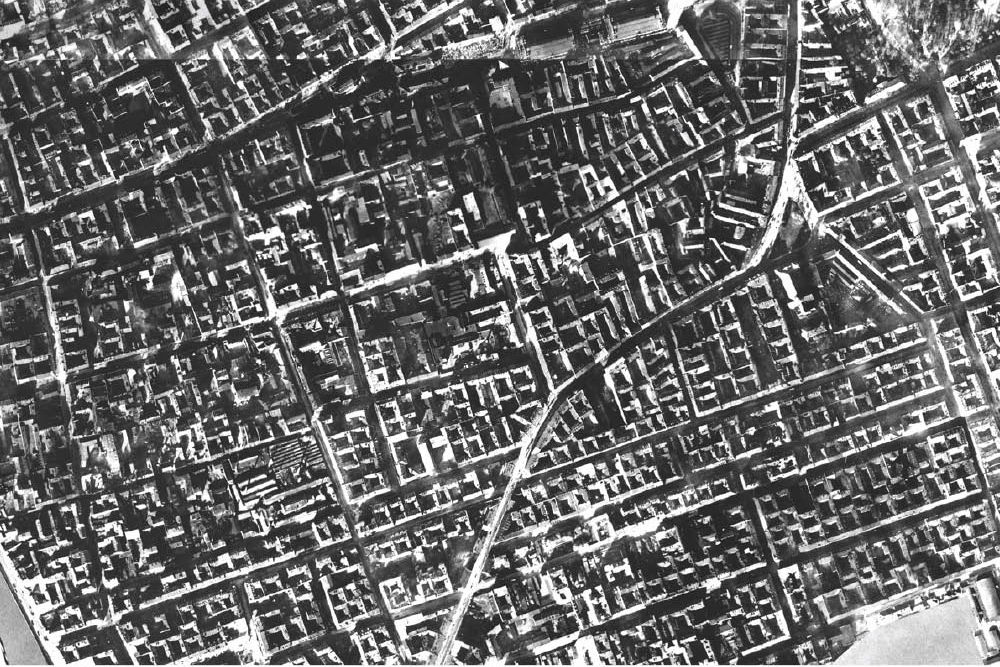
Varsovie Aujourd'hui
est méconnaissable : l'esprit et la trame même de la ville ont complètement changés
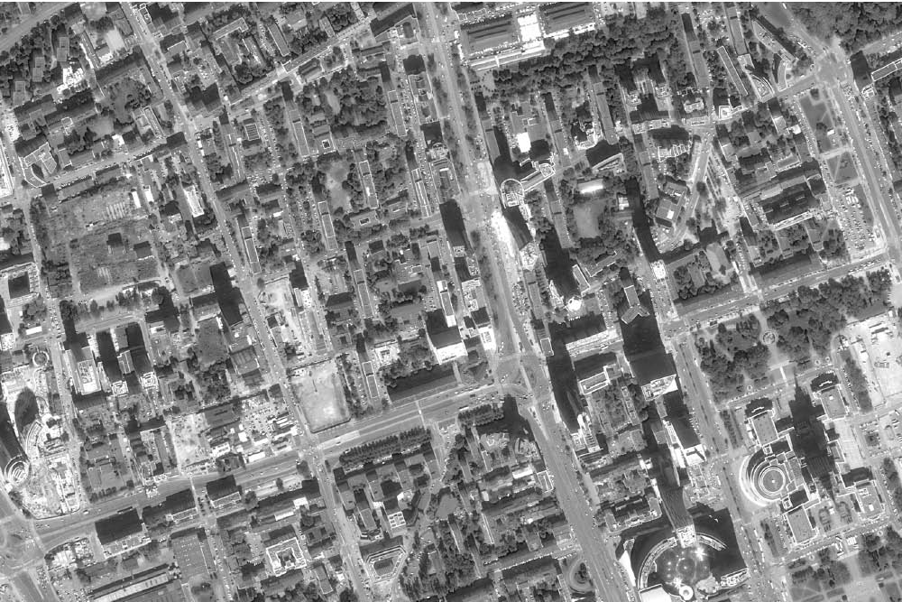
1938
Sur ce même cadrage on voit comment l'urbanisme de la ville a subi des boulversements morphologiques majeurs
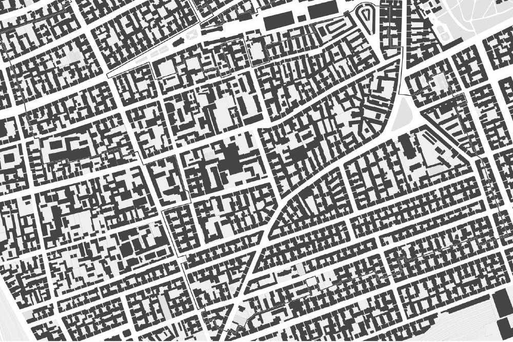
2018
Les fragments urbains qui ont survécu en plus d'un siècle se comptent sur les doigts d'une main. Qu'est ce qui s'est passé entre ces deux points de l'histoire ?
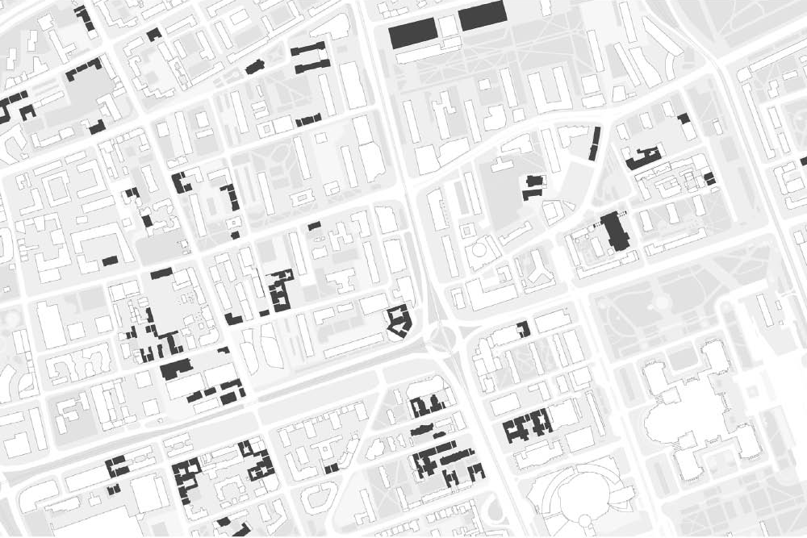
Thanatos
S.Freud, Au delà du principe de plaisir, 1920
Dans toutes formes biologiques, pulsion fondamentale de mort qui amène à l'annulation et destruction de la vie. Varsovie est détruite par un projet systématique mené par les nazis. Des équipes de sapeurs rasent des bouts entiers de la ville.
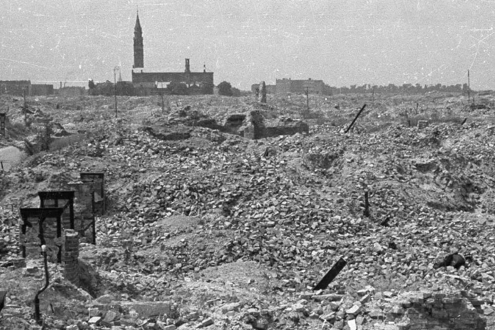
Le psychotraumatisme
S.Freud, Esquisse d'une psychologie scientifique, 1895
Méchanisme de sauvegarde d'ordre qui se met en place à la suite d'événements générant une charge émotionnelle non contrôlée et dépassant les ressources du sujet.
Le cadeau de Moscou
Varsovie est libérée par les soviétiques qui imposent un nouvel ordre politique représenté par le Palac Kultury, qui domine une ville encore en ruines.
Reconstruction à l'identique
Le centre historique est reconstitué avec les mêmes formes qu'avant, sur la base du peu de documents ayant survécu, mais en utilisant les techniques de construction modernes.
Urbanisme tabula rasa
Le reste de la ville est reconstruit selon les paradigmes de l'urbanisme moderniste. Les nouveaux tracés et barres d'immeubles sont réalisés sur les remblais entassés de la Varsovie disparue.
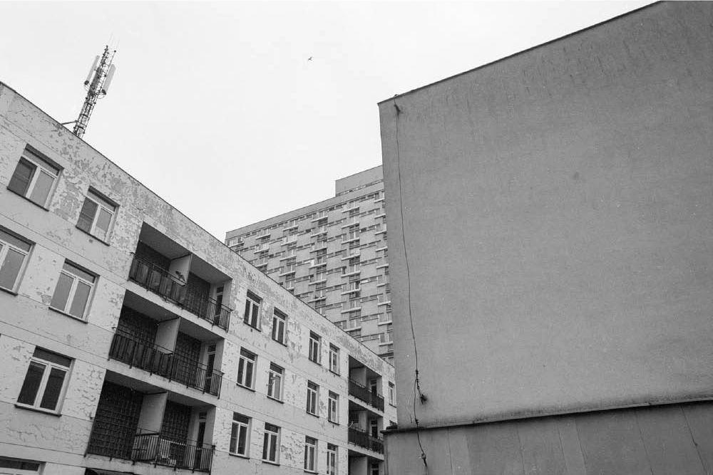
L'entrée dans le marché livre
A partir de la chute du mur de Berlin et la dissolution du bloc soviétique, la ville a subi un développement urbain vertigineux porté par les capitaux des investisseurs étrangers.
Hystérie
S.Freud, Etudes sur l'hystérie, 1895
Conflit psychique s'exprimant par des troubles psychologiques ou physiques, d'ordre fonctionnel
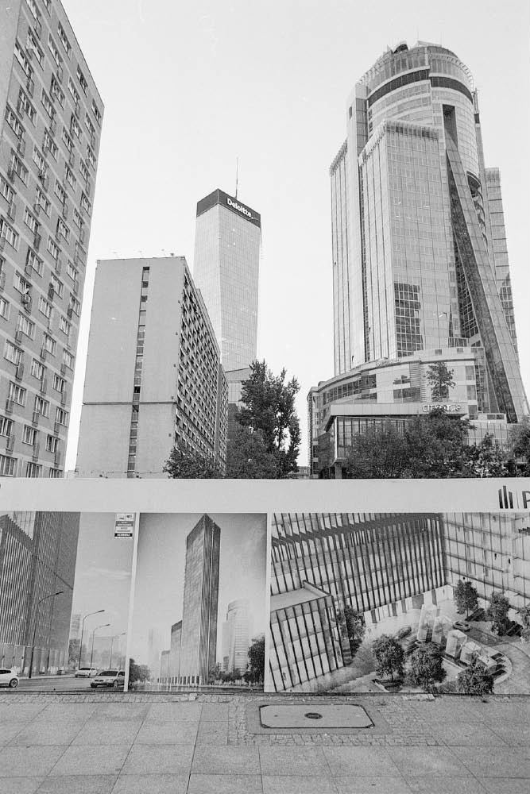
Le perturbant
S.Freud, Das Unheimliche, 1919
Sentiment d'angoisse qui jaillit des éléments du quotidien qui détournent nos certitudes.
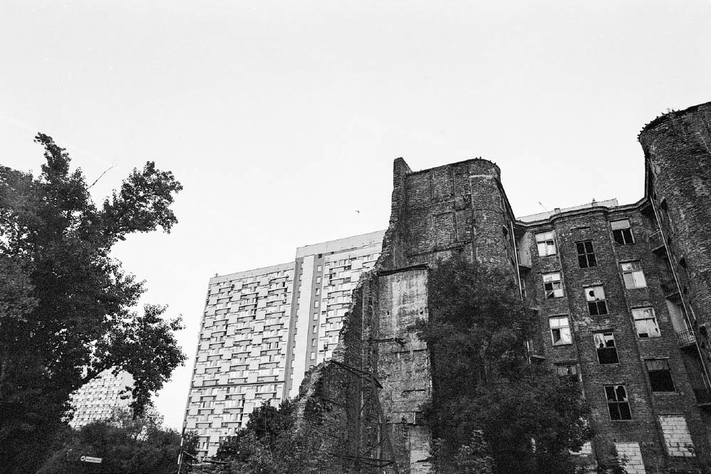
Une ville irrésolue
Ces processus de transformation morphologique radicaux qui se sont produits le long dun siècle donnent à Varsovie des traits sinistres. Le peu de fragments de la ville d'autrefois, qui survivent d'après les traumas de destrcution, sont menacés ar un développement effréné et par l'indifference. Ces traces d'un passé perdu à jamais ne trouvent aucune place dans le paysage émotionnel de la ville et sont écrasés par le boulversement d'échelle.
Le refoulement
S.Freud, Die Verdrängung, 1915
Maintient à distance de la sphère de conscient des représentations psychiques considérées comme désagréables, car inconciliables avec la vie quotidienne.
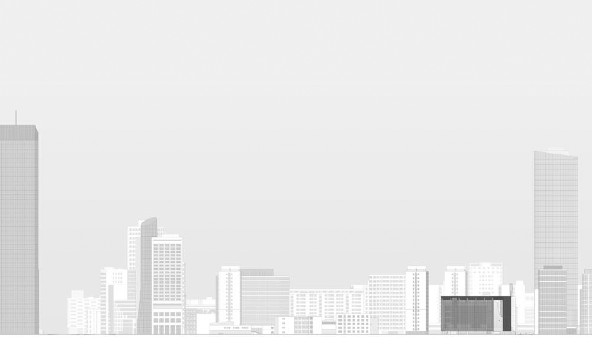
Projet de diplôme
Mémorial d'une Varsovie disparue
Le projet passe par le renversement du rapport de mise à distance. Un coffre est calé sur cette plaie ouverte, permettant de révéler la mémoire traumatique tout en protégeant ce fragment face à une ville qui le nie.
La catharsis
S.Freud, Personnages psychopathiques à la scène, 1905
Se délivrer d'un sentiment encore inavoué. Libération de la parole qui permet de se purger des passions troublantes.
Mise en scène de la mémoire
Des espaces muséaux ainsi que des résidences d'artistes et un auditorium plus médiathèque sont aménagés autour de la ruine, ouvrant le dialogue entre le présent et le passé
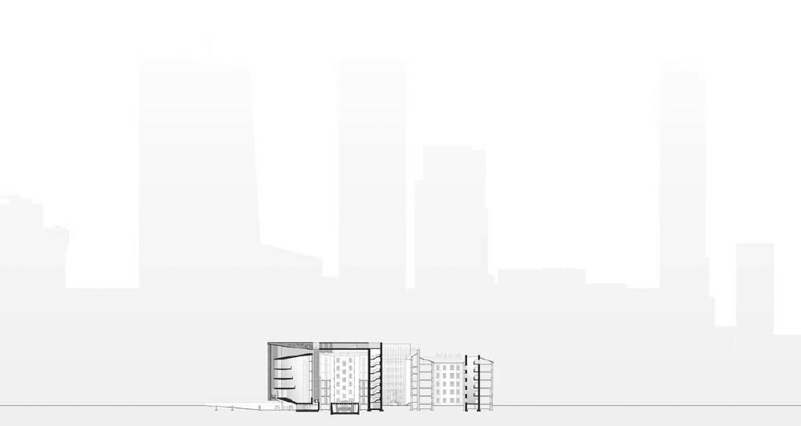
La sublimation
S.Freud, Malaise dans la civilisation, 1930
Déviation des pulsions psychopathiques se mettant à disposition d'activités culturelles socialement valorisées, et s'associant à une recherche de satisfaction esthétique.
Libération de la mémoire
Le fragment d'une histoire niée car insoutenable retrouve sa place en réactivant la vie culturelle de Varsovie.
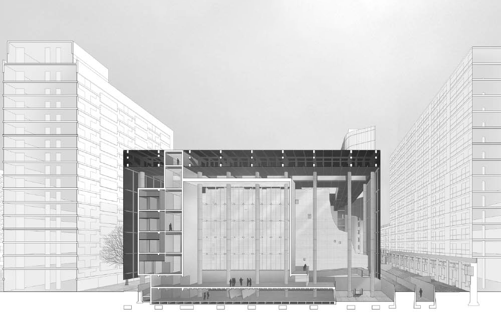
L'ensemble des articles issus du club asap 02 sont disponibles ci-dessous:
| # | Titre | Auteur | |
|---|---|---|---|
| 200 | Import = Apport ? | ASAP | Club #02 |
| 201 | Psychopathologie de la ville quotidienne | Cristiano Gerardi | Club #02 |
| 202 | De la pratique | Clarisse Protat | Club #02 |
| 203 | Architecture comme média | Basile Sordet | Club #02 |
| 204 | Le droit de citer | Hugo Forté | Club #02 |